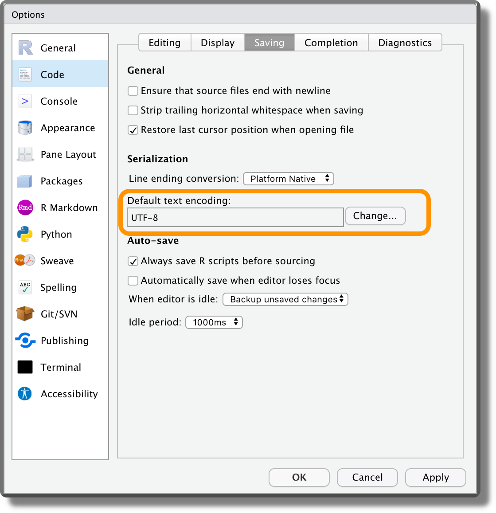

Chapter 4 Data
In the previous chapters, we learned to share our materials through the Open Science Framework (OSF) and to organize all our files in a well structured and documented project.
In this chapter, we focus on data. In particular, in Section 4.1 we provide main guidelines regarding how to organize data inside our project and, in Section 4.2, we discuss main issues related to sharing data.
4.1 Organizing Data
Ideally, we want to store all the data relevant to our project in a dedicated directory (e.g., data/). These files should be considered read-only and, in the case of data that required some preprocessing, it is recommended to include also the original raw version of the data or provide a link to retrieve it.
However, storing the data and organising it efficiently is just part of the job. We also need to provide a detailed description with all the information to allow other colleagues (aka the future us) to understand what the data contain. We do not want to save and share useless files full of 0-1 values, right?
Let’s discuss how to organize and document our data together with other useful recommendations.
4.1.1 Data Structure
There are many data formats depending on the specific data type (e.g., questionnaires, brain imaging, ERP study, conversations, etc.) and there are often no common standards. Therefore, how to manage and organize data can vary according to the specific case and needs. However, as a general case, we can consider tabular data, that is, data organized in columns and rows.
Tabular data can be structured according to the wide format or the long format.
- Wide Format. Each variable value is recorded in a separate column.
Table 4.1: Wide Format Name Sex Age Pre Post Alice F 24 … … Bob M 21 … … Carl M 23 … … - Long Format. Multiple variables can be recorded using a column to indicate the name of the measured variable and another column for the measured values.
Table 4.2: Long Format Name Sex Age Time Value Alice F 24 Pre … Alice F 24 Post … Bob M 21 Pre … Bob M 21 Post … Carl M 23 Pre … Carl M 23 Post …
Depending on our specific needs, we may choose a wide or a long format to represent our data. Usually, the long format is the preferred data format, as it is required in most analyses. However, there is an important drawback when using the long format, that is, memory inefficiency.
In general, in a long format dataset, values are unique for each row only for a few columns, whereas for all the other columns the same values are (unnecessarily) repeated multiple times. The Long Format is an inefficient way to store our data.
In the case of small datasets, this does not make a big difference and we can safely continue to store the data using the long format as is the preferred data format in most analyses. When we need to deal with large datasets, however, memory may become a relevant issue. In these cases, we need to find a more efficient way to store our data. For example, we can use the relational model to organize our data.
Relational Model. Instead of a single large table, the relational model organizes the data more efficiently by using multiple tables. Now, how can we use multiple tables to organize our data more efficiently? To clarify this process, let’s consider the data presented in the table above. We have information about participants (i.e., Name, Sex, and Age) and two measures (i.e., Pre and Post) on some outcomes of interest in our study. Using the long data format, participants’ information is (unnecessarily) repeated multiple times. Following a relational model, we can create two separate tables, one for the participants’ information and the other for the study measures. In this way, we do not repeat the same information multiple times optimizing the memory required to store our data.
Table 4.3: Subjects ID Name Sex Age 1 Alice F 24 2 Bob M 21 3 Carl M 23 Table 4.3: Study ID Subject_ID Time Value 1 1 Pre … 2 1 Post … 3 2 Pre … 4 2 Post … 5 3 Pre … 6 3 Post … But, how should we read these tables? Note that each table has a column
IDwith the unique identifier for each row. These IDs are used to define the relational structure between different tables. For example, in our case, the table Study has a columnSubject_IDthat indicates the subject ID for that specific row. Matching theSubject_IDvalue in the Study table with theIDcolumn in the Subjects table, we can retrieve all the participants’ information from a specific row.This matching operation is usually defined as a JOIN operation and allows us to reconstruct our data in the desired format starting from separate tables.
If you have used SQL before, you are already familiar with relational databases and join operations. At first, these concepts may seem very complicated. In reality, as soon as we familiarize ourselves with all the technical terms, everything becomes very easy and intuitive. So do not be scared by buzz words such as “primary-key”, “foreign-key”, “left-join”, “inner-join”, or other jargon. You will quickly master all of them.
Most programming languages provide dedicated libraries and tutorials to execute all these operations. For example, if working with R consider https://r4ds.had.co.nz/relational-data.html.
4.1.2 Documentation
A dataset without documentation is like a sky without stars\(\ldots\) we can not see anything. We need to describe our data by providing details not only regarding all the variables but also about the data collection process or other information that could be relevant to properly interpret the data.
To document the data, we do not need anything fancy, a simple Markdown file is more than enough. An advantage of using Markdown files is that most online repositories automatically render Markdown files when navigating from the browser.
So, considering the data in the previous example, we could create the following data-README.md.
#----- data-README.md ----#
# Data README
## General Info
Details about the study/project, authors, License, or other relevant
information.
Description of the data collection process or links to the paper/external
documentation for further details.
## Details
The dataset `my-study.csv` is formed by n rows and k columns:
- `Name`. Character variable indicating the subject name
- `Sex`. Factor variable indicating the subject gender (levels are `"F"`
for females and `"M"` for males)
- `Age`. Numeric variable indicating subject age (in years)
- `Time`. Factor variable indicating measure time (levels are `"Pre"` and
`"Post"`)
- `Value`. Numeric variable indicating the outcome measure
- ...There are no strict rules about what we should include or not in our data README file. We are free to structure it according to our needs. As a generic recommendation, however, we should specify data general information about:
- Study/Project. Reference to the specific study or project.
- Authors. List of the authors with contact details of the corresponding author or the maintainer of the project.
- License. Specify under which license the data are released (see Section 4.2.3).
- Data Collection Process. Description of relevant aspects of the data collection or external links for further details.
Ideally, we should provide all the required details to allow other colleagues to understand the context in which data were collected and to evaluate their relevance for possible other uses (e.g., meta-analyses). We can also provide links to raw data if these are available elsewhere.
Considering the information about the dataset, we should provide the dimension of the dataset and a list with the details for each variable. In particular, we should indicate:
- Variable Name. The name of the variable as it is coded.
- Variable Type. The specific variable type (i.e., string, integer, numeric, logic, other)
- Variable Meaning. The description of what the values indicate.
- Variable Values. Information about the variable values. This could include a list of all the labels and their meaning (or the number of levels) for categorical variables; the range of allowed values for numeric variables; the unit of measurement or a description of how the variable was computed if relevant.
- Missing Values. Specify how missing values are coded or any other value used to indicate special conditions.
4.1.3 Data Good Practices
Finally, let’s consider two other general aspects regarding data that are important to take into account:
File Format. There are many possible file formats. However, an important distinction concerns proprietary format and open format (definitions adapted from the Open Data Handbook, see https://opendatahandbook.org).
Proprietary Format. Those formats owned and controlled by a specific company. These data formats require specific dedicated software to be read reliably and usually, we need to pay to use them. Note that the description of these formats may be confidential or unpublished, and can be changed by the company at any time. Common examples are XLS and XLSX formats used by Microsoft Excel.
Open Format. All those file formats that can be reliably used by at least one free/open-source software tool. A file in an open format guarantees that there are no restrictions or monetary fee to correctly read and use it. Common examples are the
RDAandRDSformats used internally by R.We should avoid proprietary formats and always use open formats, instead. In particular, we should not use open formats related to specific software (even if is open-source), but prefer general text formats (e.g., CSV) that can be used easily by many tools.
Machine Readable. Data should be stored in a format that allows other researchers to easily use them. People saving tabular data in a PDF file would deserve to be punished in hell. Do they expect us to copy and paste all values by hand?
Character Encoding. All characters (i.e., letters, numbers and symbols) are stored in our machine as sequence bits (i.e., the fundamental unit of information that can assume binary values 0 or 1). Encoding refers to the specific process of converting different characters into their numerical representation. While decoding is the reverse operation.
There are different standards for different alphabets, so if we open a text file using the wrong decoding, characters can be confused with each other. Many issues typically arise with accented letters.
UTF-8 is becoming the standard method for encoding files, as it allows to encode efficiently all characters from any alphabet. We should always save our data and any other file using the UTF-8 encoding. If for some reason we need to use a different encoding, remember to explicitly state the used encoding. This will save our colleagues from lots of trouble.
From RStudio, we can set UTF-8 as default text encoding from “Tools -> Global Options -> Code -> Saving”. 
The Rawer the Better. We should share data in a format as raw as possible allowing other colleagues to reproduce the analysis from the very beginning.